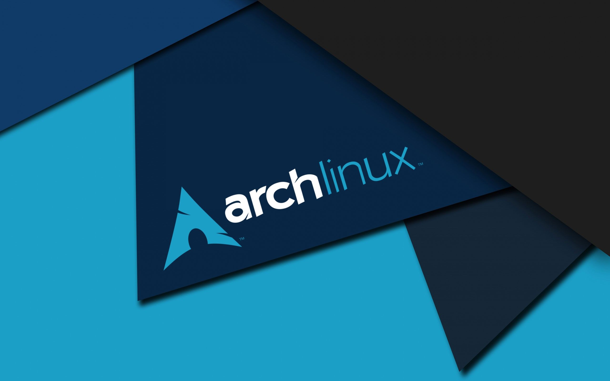

 Arch Linux All Content Anonymizing Networks Freenet GNUnet I2P Lantern Tor Audio Arch - Docs 1 Codecs Arch - Docs 1 Collection Manager Arch - Docs 1 Emails Arch - Docs 1 File Sharing Arch - Docs 1 Image Arch - Docs 1 Instant Messaging Arch - Docs 1 Media Server Arch - Docs 1 Metadata Arch - Docs 1 Mobile Device Arch - Docs 1 Network Manager Arch - Docs 1 News dan RSS Arch - Docs 1 Optical Disc Arch - Docs 1 Proxy Server Arch - Docs 1 Remote Desktop Arch - Docs 1 Video Arch - Docs 1 VPN Clients Arch - Docs 1 Web Browser Arch - Docs 1 Web Servers Arch - Docs 1